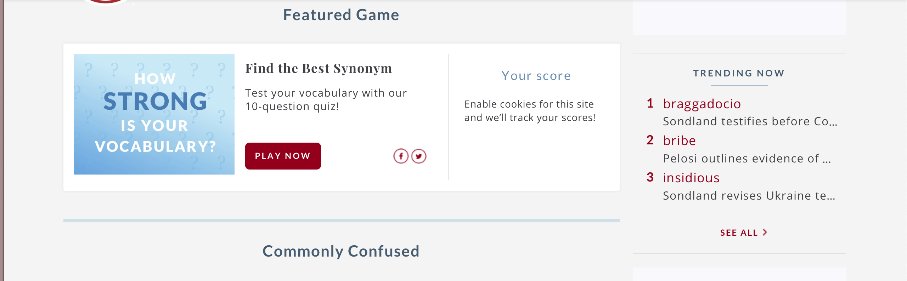
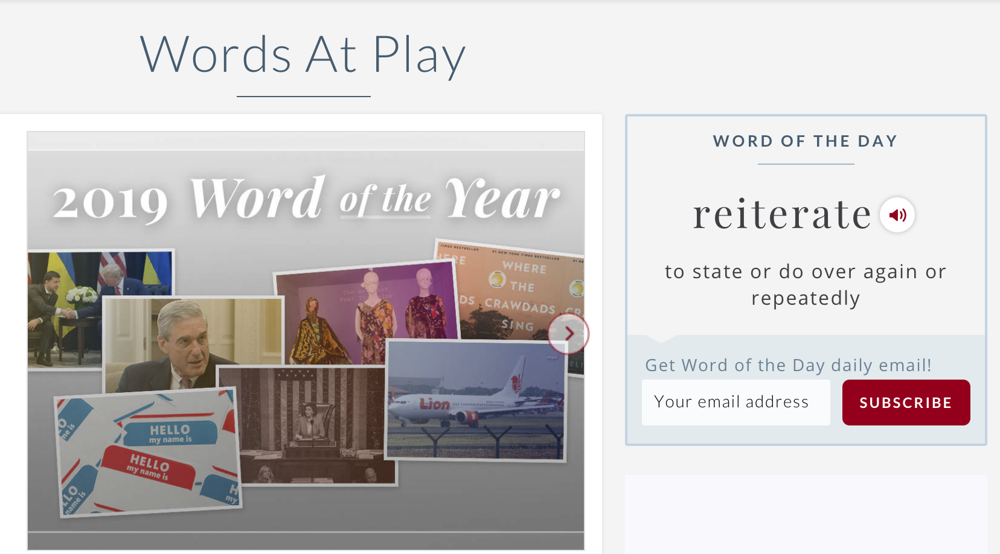
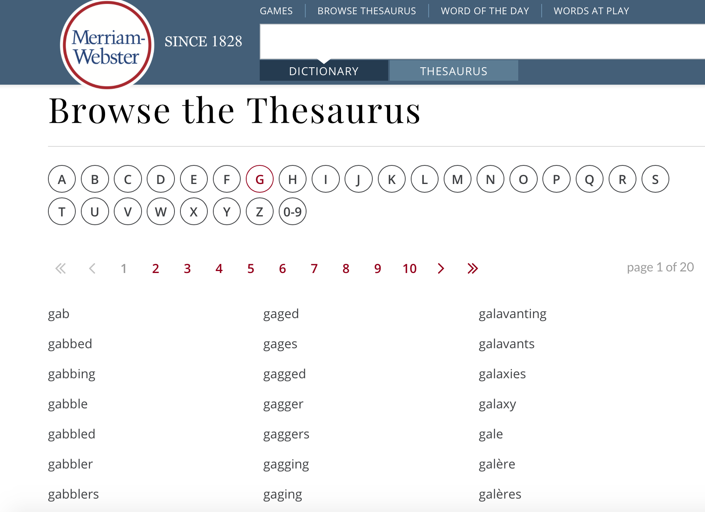
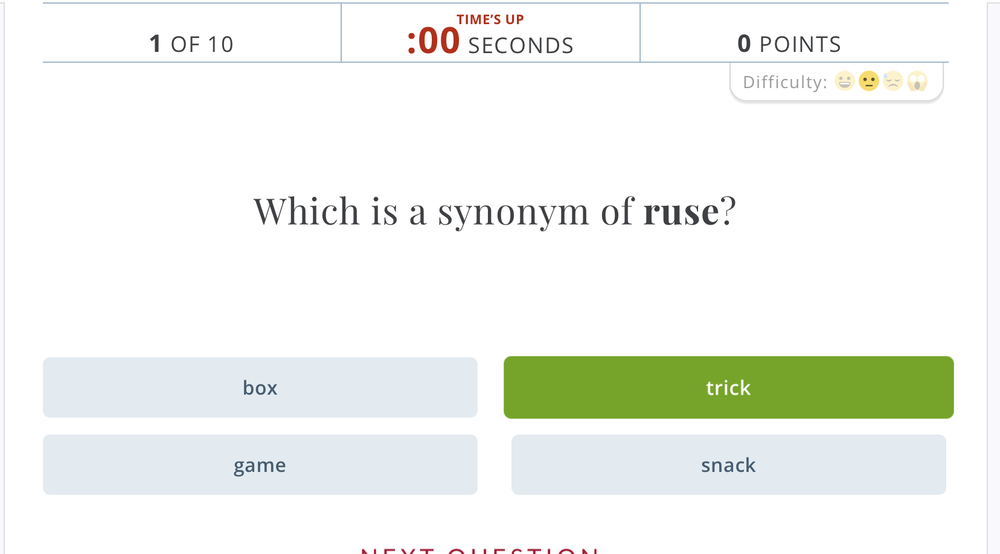
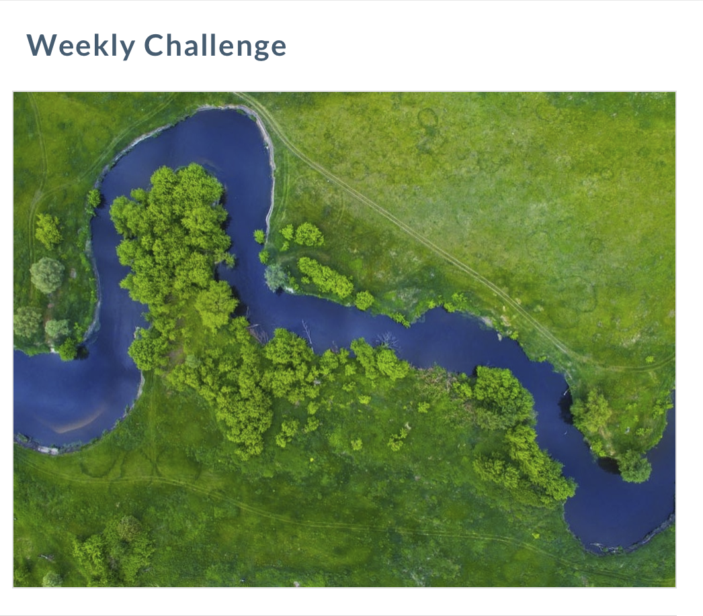
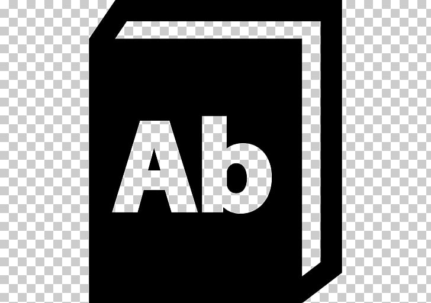
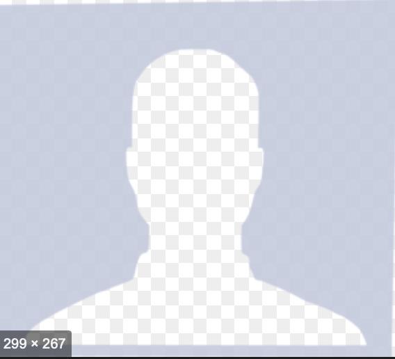

Merriam Webster
About Us
For more than 150 years, in print and now online, Merriam-Webster has been America's leading and most-trusted provider of language information. Each month, our Web sites offer guidance to more than 40 million visitors. In print, our publications include Merriam-Webster's Collegiate Dictionary (among the best-selling books in American history) and newly published dictionaries for English-language learners. All Merriam-Webster products and services are backed by the largest team of professional dictionary editors and writers in America, and one of the largest in the world. Thanks for joining us.

Words of the Day
unique words on daily bases to learn.

Thesaurus search
Search more than 275,000 synonyms, antonyms, related words, and idiomatic phrases. Find concise definitions pinpointing the meaning shared by synonyms, and sample sentences showing how words are used in context. The thesaurus is more than just a list of synonyms; it is your guide to more precise and effective use of language.

Contact Us
Thank you for your interest in Merriam-Webster. We find that many questions can be answered at our Help Pages, so you may find your answer more quickly if you browse those options first. Otherwise, use the form below to send your comment or questions, and don’t forget to select the topic you are contacting us about! Merriam-Webster Inc. 47 Federal Street Springfield, MA 01105 Phone: (413) 734-3134
A BIG THANK Merriam Webster for creating a wonderful App to help in learning new vocabulary with intersting activities. HERE.
Make Your Own List to learn English vocabulary

Here you can create your own checklist.
| To Do | ||
|---|---|---|
|
|
||
|
|
||
|
|
||
|
|
||
|
|
||
|
|
Here are Some Ways to do fun activities

Merbium Webster dictionary makes life easier.
-
star
Game
There are some weekly challenges where people can use their vocabulary and learn more words. Like Semantic Drift Quiz, in this game These words may not be on the tip of anyone's tongue, but once upon a time all of these were synonyms for common words. If you want to sound as though you had spent the morning eating a very old thesaurus instead of breakfast then this quiz is for you. It will give you superpowers: the knowledge you gain will annoy your friends and annoy your enemies even more.
-
star
Word of the Day
Every day there will be a new word with its usage in sentences with synonymous and antonymous.
-
star
Words At Play
learn while playing. There are so many other game for adult and kids game for fun as well as for learning purpose.
-
star
Browse Thesaurus
search for synonyms and antonyum.
Github Page

If you would like to follow me on Github. Click here for my Github for IT_202 projects.
About Me

My name is Nawal Khan. I am student at UIC studying Computer Science. Expected date of graduation is 2020.